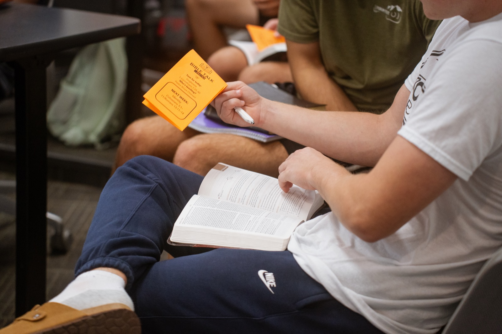

Engage, Evangelize, Establish and Equip
At TBT, we have a wide variety of ways for you to be engaged and to further your spiritual maturity. Whether you're looking to dive deep into scripture with fellow believers or seeking guidance and mentorship through training sessions, there's something for everyone. Come explore the opportunities to learn, share, and grow together in faith!
Sign up hereWe'll only use your info to reach out about TBT — we never share it with third parties.
"Go therefore and make disciples of all nations, baptizing them in the name of the Father and of the Son and of the Holy Spirit, teaching them to observe all that I have commanded you. And behold, I am with you always, to the end of the age."
Matthew 28:19–20

Bible Quads are a group of up to 4 people that meet at their convenience to read through a book of the Bible together. Home groups are larger than quads and meet in a leader's home to study the Bible.
▶ Watch: Quads (2:17)We'll only use your info to reach out about TBT — we never share it with third parties.
Join us on Mondays as we explore a book of the Bible or a topic, providing an opportunity for learning and reflection. We also dedicate time to intentional prayer, concentrating on the needs of those around us.
On every other Monday, and various other days during the week, we walk around campus and engage students with thoughtful questions and conversation that ultimately lead to the gospel being shared with them. We pray on alternate Mondays in the lobby at Williamson at noon.
Join us for the Sunday morning service at Old North Church at 9:15, then stick around for TBT Sunday School at 11 — a space just for students to dig into the Bible together outside our weekday rhythm.
Old North Church →